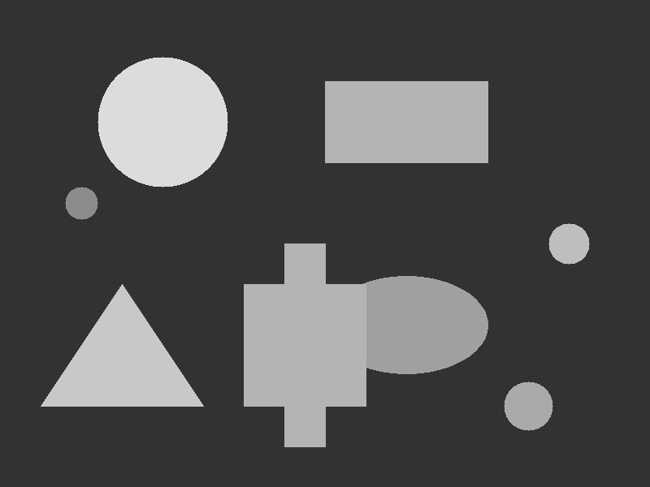
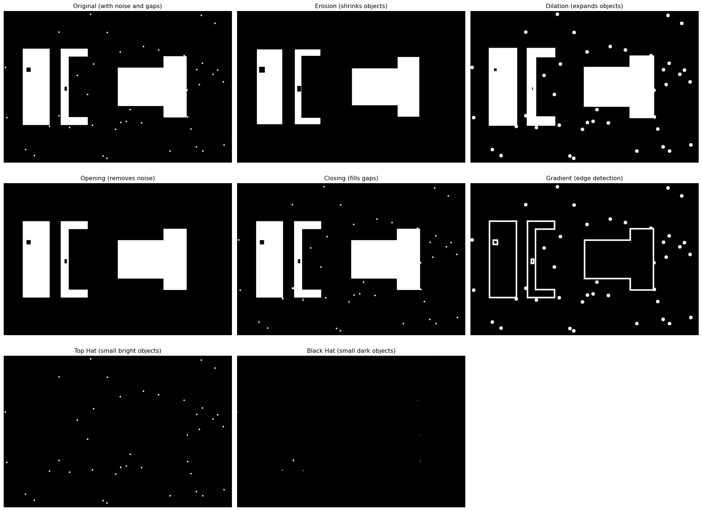
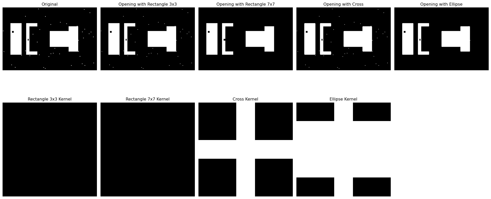
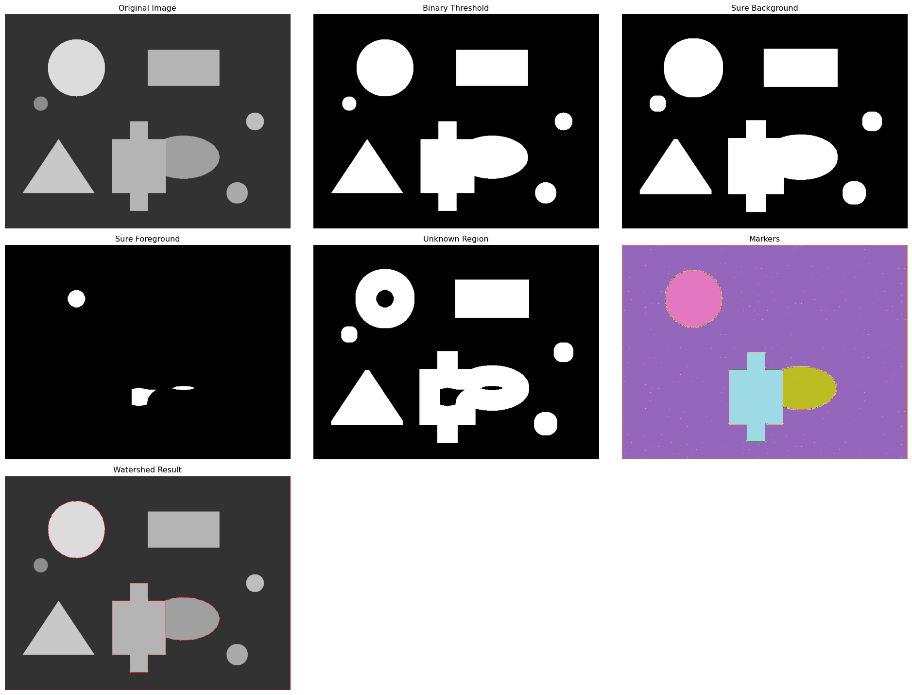

Image segmentation concept - dividing images into meaningful regions
0.1 The Art of Divide and Conquer
Imagine you’re looking at a crowded photo and trying to identify individual people. Your brain automatically separates the image into distinct regions—faces, bodies, background objects. This is exactly what image segmentation does: it divides an image into meaningful parts that we can analyze separately.
Today, we’ll master the classical techniques that form the foundation of modern computer vision. From simple thresholding to advanced morphological operations, you’ll learn to segment images like a pro!
Tip
Try it yourself! Open this interactive Colab notebook to experiment with segmentation techniques as we build this tutorial.
0.2 What is Image Segmentation?
Image segmentation is the process of partitioning an image into multiple segments or regions. Each segment represents something meaningful—objects, boundaries, or areas of interest.
Think of it like: - Coloring book: Each region gets its own color - Jigsaw puzzle: Breaking the image into pieces - Map making: Dividing territory into districts

Segmentation demonstration with multiple objects
This synthetic image shows perfect segmentation targets: - Bright objects on dark background - Different intensities for various techniques - Multiple shapes to test robustness - Noise elements to challenge algorithms
0.3 Technique 1: Thresholding - The Foundation
Thresholding is the simplest segmentation technique. It converts grayscale images to binary (black and white) by setting a threshold value.
🎯 Thresholding Results:
- Binary: Simple threshold at 127
- Adaptive Mean: Local neighborhood average
- Adaptive Gaussian: Weighted neighborhood average
- Otsu: Automatically found optimal threshold
🔥 Amazing! Each technique handles different scenarios: - Binary: Works when lighting is uniform - Adaptive: Handles varying lighting conditions - Otsu: Automatically finds the best threshold
0.4 Technique 2: Morphological Operations - Shape Surgery
Morphological operations are like performing surgery on shapes. They can clean up noise, separate connected objects, or fill gaps.
0.4.1 The Core Operations
Code
# Load our morphological demo image (designed for these operations)morph_img = cv2.imread('images/morphological-demo.jpg', cv2.IMREAD_GRAYSCALE)def demonstrate_morphological_operations(image):"""Show the four basic morphological operations"""# Define structuring element (kernel) kernel = np.ones((5, 5), np.uint8)# Basic operations erosion = cv2.erode(image, kernel, iterations=1) dilation = cv2.dilate(image, kernel, iterations=1) opening = cv2.morphologyEx(image, cv2.MORPH_OPEN, kernel) closing = cv2.morphologyEx(image, cv2.MORPH_CLOSE, kernel)# Advanced operations gradient = cv2.morphologyEx(image, cv2.MORPH_GRADIENT, kernel) tophat = cv2.morphologyEx(image, cv2.MORPH_TOPHAT, kernel) blackhat = cv2.morphologyEx(image, cv2.MORPH_BLACKHAT, kernel)return erosion, dilation, opening, closing, gradient, tophat, blackhat# Apply morphological operationserosion, dilation, opening, closing, gradient, tophat, blackhat = demonstrate_morphological_operations(morph_img)# Display resultsplt.figure(figsize=(20, 15))plt.subplot(3, 3, 1)plt.imshow(morph_img, cmap='gray')plt.title("Original (with noise and gaps)")plt.axis('off')plt.subplot(3, 3, 2)plt.imshow(erosion, cmap='gray')plt.title("Erosion (shrinks objects)")plt.axis('off')plt.subplot(3, 3, 3)plt.imshow(dilation, cmap='gray')plt.title("Dilation (expands objects)")plt.axis('off')plt.subplot(3, 3, 4)plt.imshow(opening, cmap='gray')plt.title("Opening (removes noise)")plt.axis('off')plt.subplot(3, 3, 5)plt.imshow(closing, cmap='gray')plt.title("Closing (fills gaps)")plt.axis('off')plt.subplot(3, 3, 6)plt.imshow(gradient, cmap='gray')plt.title("Gradient (edge detection)")plt.axis('off')plt.subplot(3, 3, 7)plt.imshow(tophat, cmap='gray')plt.title("Top Hat (small bright objects)")plt.axis('off')plt.subplot(3, 3, 8)plt.imshow(blackhat, cmap='gray')plt.title("Black Hat (small dark objects)")plt.axis('off')plt.tight_layout()plt.show()print("🔧 Morphological Operations Explained:")print("- Erosion: Shrinks white regions (removes noise)")print("- Dilation: Expands white regions (fills small gaps)")print("- Opening: Erosion followed by dilation (removes small noise)")print("- Closing: Dilation followed by erosion (fills gaps in objects)")print("- Gradient: Difference between dilation and erosion (edges)")print("- Top Hat: Original minus opening (small bright features)")print("- Black Hat: Closing minus original (small dark features)")

🔧 Morphological Operations Explained:
- Erosion: Shrinks white regions (removes noise)
- Dilation: Expands white regions (fills small gaps)
- Opening: Erosion followed by dilation (removes small noise)
- Closing: Dilation followed by erosion (fills gaps in objects)
- Gradient: Difference between dilation and erosion (edges)
- Top Hat: Original minus opening (small bright features)
- Black Hat: Closing minus original (small dark features)
0.4.2 Understanding Kernels
Code
# Different kernel shapes for different effectsdef show_kernel_effects():"""Demonstrate how different kernels affect morphological operations"""# Create different kernels kernels = {'Rectangle 3x3': np.ones((3, 3), np.uint8),'Rectangle 7x7': np.ones((7, 7), np.uint8),'Cross': cv2.getStructuringElement(cv2.MORPH_CROSS, (5, 5)),'Ellipse': cv2.getStructuringElement(cv2.MORPH_ELLIPSE, (5, 5)) } results = {}for name, kernel in kernels.items():# Apply opening operation with different kernels result = cv2.morphologyEx(morph_img, cv2.MORPH_OPEN, kernel) results[name] = resultreturn kernels, resultskernels, kernel_results = show_kernel_effects()# Visualize kernel effectsplt.figure(figsize=(20, 10))plt.subplot(2, 5, 1)plt.imshow(morph_img, cmap='gray')plt.title("Original")plt.axis('off')for i, (name, result) inenumerate(kernel_results.items(), 2): plt.subplot(2, 5, i) plt.imshow(result, cmap='gray') plt.title(f"Opening with {name}") plt.axis('off')# Show the kernels themselvesfor i, (name, kernel) inenumerate(kernels.items(), 6): plt.subplot(2, 5, i) plt.imshow(kernel *255, cmap='gray') plt.title(f"{name} Kernel") plt.axis('off')plt.tight_layout()plt.show()print("🎯 Kernel Shape Effects:")print("- Rectangle: General-purpose, preserves rectangular features")print("- Cross: Connects horizontal/vertical elements")print("- Ellipse: Preserves circular/curved features")print("- Size matters: Larger kernels = stronger effects")

🎯 Kernel Shape Effects:
- Rectangle: General-purpose, preserves rectangular features
- Cross: Connects horizontal/vertical elements
- Ellipse: Preserves circular/curved features
- Size matters: Larger kernels = stronger effects
Watershed segmentation treats the image like a topographic map and “floods” it to separate regions. Perfect for separating touching objects!
Code
from scipy import ndimagefrom skimage.segmentation import watersheddef watershed_segmentation(image):"""Apply watershed segmentation to separate touching objects"""# Convert to grayscale if needediflen(image.shape) ==3: gray = cv2.cvtColor(image, cv2.COLOR_RGB2GRAY)else: gray = image# Apply threshold to get binary image _, binary = cv2.threshold(gray, 0, 255, cv2.THRESH_BINARY + cv2.THRESH_OTSU)# Remove noise with morphological opening kernel = np.ones((3, 3), np.uint8) opening = cv2.morphologyEx(binary, cv2.MORPH_OPEN, kernel, iterations=2)# Find sure background area sure_bg = cv2.dilate(opening, kernel, iterations=3)# Find sure foreground area using distance transform dist_transform = cv2.distanceTransform(opening, cv2.DIST_L2, 5) _, sure_fg = cv2.threshold(dist_transform, 0.7* dist_transform.max(), 255, 0)# Find unknown region sure_fg = np.uint8(sure_fg) unknown = cv2.subtract(sure_bg, sure_fg)# Marker labelling _, markers = cv2.connectedComponents(sure_fg)# Add one to all labels so that sure background is not 0, but 1 markers = markers +1# Mark the region of unknown with zero markers[unknown ==255] =0# Apply watershediflen(image.shape) ==3: markers = cv2.watershed(image, markers) result = image.copy() result[markers ==-1] = [255, 0, 0] # Mark boundaries in redelse:# For grayscale, create a color version for visualization result = cv2.cvtColor(gray, cv2.COLOR_GRAY2RGB) markers_watershed = cv2.watershed(result, markers) result[markers_watershed ==-1] = [255, 0, 0]return binary, sure_bg, sure_fg, unknown, markers, result# Apply watershed to our demo imagebinary, sure_bg, sure_fg, unknown, markers, watershed_result = watershed_segmentation(img_rgb)# Display watershed processplt.figure(figsize=(20, 15))plt.subplot(3, 3, 1)plt.imshow(img_rgb)plt.title("Original Image")plt.axis('off')plt.subplot(3, 3, 2)plt.imshow(binary, cmap='gray')plt.title("Binary Threshold")plt.axis('off')plt.subplot(3, 3, 3)plt.imshow(sure_bg, cmap='gray')plt.title("Sure Background")plt.axis('off')plt.subplot(3, 3, 4)plt.imshow(sure_fg, cmap='gray')plt.title("Sure Foreground")plt.axis('off')plt.subplot(3, 3, 5)plt.imshow(unknown, cmap='gray')plt.title("Unknown Region")plt.axis('off')plt.subplot(3, 3, 6)plt.imshow(markers, cmap='tab20')plt.title("Markers")plt.axis('off')plt.subplot(3, 3, 7)plt.imshow(watershed_result)plt.title("Watershed Result")plt.axis('off')plt.tight_layout()plt.show()print("🌊 Watershed Segmentation Steps:")print("1. Threshold to get binary image")print("2. Find sure background (dilated objects)")print("3. Find sure foreground (distance transform peaks)")print("4. Mark unknown regions between sure areas")print("5. Apply watershed algorithm to flood from markers")print("6. Red lines show the watershed boundaries!")

🌊 Watershed Segmentation Steps:
1. Threshold to get binary image
2. Find sure background (dilated objects)
3. Find sure foreground (distance transform peaks)
4. Mark unknown regions between sure areas
5. Apply watershed algorithm to flood from markers
6. Red lines show the watershed boundaries!
0.6 Technique 4: Contour-Based Segmentation
Contours are the boundaries of objects. We can use them to segment and analyze individual objects.
Code
def contour_segmentation(image):"""Find and analyze contours for segmentation"""# Convert to grayscaleiflen(image.shape) ==3: gray = cv2.cvtColor(image, cv2.COLOR_RGB2GRAY)else: gray = image# Apply threshold _, binary = cv2.threshold(gray, 0, 255, cv2.THRESH_BINARY + cv2.THRESH_OTSU)# Find contours contours, hierarchy = cv2.findContours(binary, cv2.RETR_EXTERNAL, cv2.CHAIN_APPROX_SIMPLE)# Create result image result = image.copy() iflen(image.shape) ==3else cv2.cvtColor(gray, cv2.COLOR_GRAY2RGB)# Analyze each contour contour_info = [] colors = [(255, 0, 0), (0, 255, 0), (0, 0, 255), (255, 255, 0), (255, 0, 255), (0, 255, 255)]for i, contour inenumerate(contours):# Calculate contour properties area = cv2.contourArea(contour) perimeter = cv2.arcLength(contour, True)# Filter small contours (noise)if area >500: # Minimum area threshold# Get bounding rectangle x, y, w, h = cv2.boundingRect(contour)# Get center M = cv2.moments(contour)if M["m00"] !=0: cx =int(M["m10"] / M["m00"]) cy =int(M["m01"] / M["m00"])else: cx, cy =0, 0# Draw contour and info color = colors[i %len(colors)] cv2.drawContours(result, [contour], -1, color, 3) cv2.rectangle(result, (x, y), (x + w, y + h), color, 2) cv2.circle(result, (cx, cy), 5, color, -1)# Add text cv2.putText(result, f"#{i+1}", (x, y-10), cv2.FONT_HERSHEY_SIMPLEX, 0.7, color, 2) contour_info.append({'id': i+1,'area': area,'perimeter': perimeter,'center': (cx, cy),'bounding_box': (x, y, w, h) })return binary, result, contour_info# Apply contour segmentationbinary_contours, contour_result, contour_info = contour_segmentation(img_rgb)# Display resultsplt.figure(figsize=(15, 8))plt.subplot(1, 3, 1)plt.imshow(img_rgb)plt.title("Original Image")plt.axis('off')plt.subplot(1, 3, 2)plt.imshow(binary_contours, cmap='gray')plt.title("Binary Image")plt.axis('off')plt.subplot(1, 3, 3)plt.imshow(contour_result)plt.title("Contour Segmentation")plt.axis('off')plt.tight_layout()plt.show()# Print contour analysisprint("🔍 Contour Analysis Results:")print("-"*50)for info in contour_info:print(f"Object #{info['id']}:")print(f" Area: {info['area']:.0f} pixels")print(f" Perimeter: {info['perimeter']:.1f} pixels")print(f" Center: {info['center']}")print(f" Bounding box: {info['bounding_box']}")print()
You’ve just learned the fundamental techniques for breaking images into meaningful parts! Segmentation is used everywhere from medical imaging to autonomous vehicles. Next, we’ll explore how to find unique features that make images recognizable.
Reuse
CC BY-NC-SA 4.0
Citation
BibTeX citation:
@online{2025,
author = {, Hasan},
title = {Image {Segmentation:} {Dividing} and {Conquering}},
date = {2025-01-23},
url = {https://hasangoni.quarto.pub/hasan-blog-post/posts/series/cv-foundations/05-image-segmentation.html},
langid = {en}
}